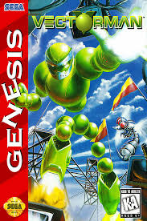
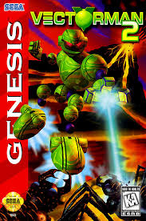

The Vectorman video game series is a pair of side-scrolling run-and-gun platformers developed by BlueSky Software and published by Sega for the Sega Genesis in the mid-1990s. Set in a dystopian future where Earth has been polluted and abandoned by humans, the games follow Vectorman, an "orbot" (a robot made of orbs) who becomes an unlikely hero fighting to restore peace after rogue robots, such as the tyrannical WarHead in the first game, threaten the planet. Known for its fluid animation, innovative use of pre-rendered 3D-style graphics, and intense, fast-paced gameplay, the Vectorman series stood out on the Genesis for pushing the console's visual limits. Despite its critical acclaim, the series ended after two entries, with several planned sequels and reboots ultimately canceled.
Major Games
Vectorman
Vectorman, released in 1995 for the Sega Genesis, is a fast-paced side-scrolling platformer set in a grim future where Earth has been left in ruin by pollution and humanity has fled to space. The story centers on Vectorman, an “orbot” (a robot composed of orbs) tasked with cleaning up the planet. When a fellow orbot named Raster is fused with a nuclear warhead and becomes the tyrannical WarHead, he seizes control and threatens the planet’s safety. Vectorman becomes the last hope to stop WarHead and save Earth. Praised for its smooth animation, detailed graphics using pre-rendered 3D sprites, and tight gameplay, Vectorman was a standout title on the Genesis and remains a cult favorite among retro gaming fans.
Vectorman 2
Streets of Rage 2 is a classic side-scrolling beat 'em up game released in 1992 for the Sega Genesis, and it serves as a sequel to the original Streets of Rage. The game follows four heroes—Axel Stone, Blaze Fielding, Max Thunder, and Eddie "Skate" Hunter—as they battle their way through the city to rescue Skate’s brother, Adam, who has been kidnapped by the evil crime syndicate led by the returning villain, Mr. X. Featuring improved graphics, a memorable electronic soundtrack by Yuzo Koshiro, and refined gameplay mechanics, Streets of Rage 2 is widely praised for its cooperative play, diverse enemy types, and satisfying combat system, cementing its status as one of the best beat 'em up games of its era.